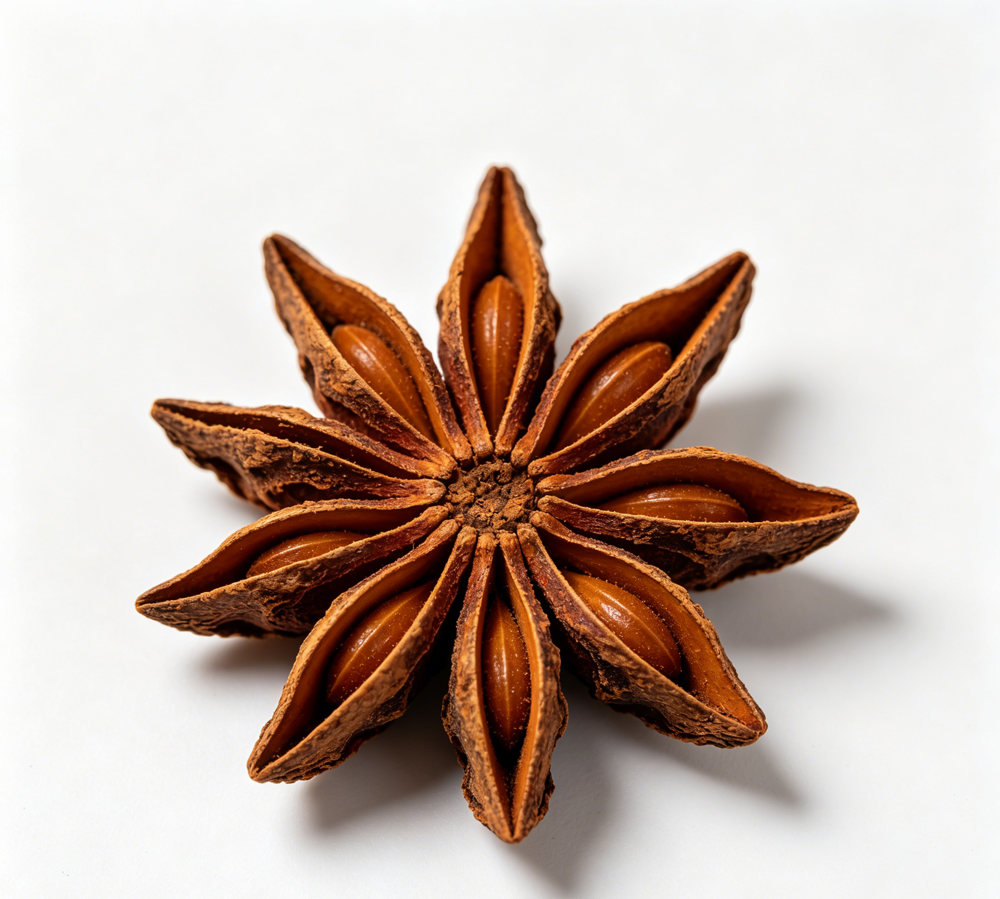

📋 基本信息
中文名八角茴香
拉丁名Star anise
英文名Star Anise
产地主产于：广西、广东、云南；木兰科八角属
性状本品为聚合果，多由8个蓇葖果组成，放射状排列于中轴上。蓇葖果长1～2cm，宽0.3～0.5cm，高0.6～1cm；外表面红棕色，有不规则皱纹，顶端呈鸟喙状，上侧多开裂；内表面淡棕色，平滑，有光泽；质硬而脆。果梗长3～4cm，连于果实基部中央，弯曲，常脱落。每个蓇葖果含种子1粒， 扁卵圆形，长约6mm，红棕色或黄棕色，光亮，尖端有种脐；胚乳白色，富油性。气芳香，味辛、甜。
用法用量3～6g。
贮藏置阴凉干燥处。
☯ 传统属性
四气温
五味辛
归经肝、肾、脾、胃经
功能主治温阳散寒，理气止痛。用于寒疝腹痛，肾虚腰痛，胃寒呕吐，脘腹冷痛。
禁忌症不宜与郁金同用。
毒性视力损伤；1.广西田东县产(统货)和广西南宁市商品(食用二级)八角茴香提取的挥发油，以每1kg259剂量ig健康小鼠，观察7d，未见死亡。
2.小鼠po4g/kg，ip1.5g/kg。茴香脑的顺式异构体ip大鼠0.07g/kg。小鼠0.095g/kg。反式异物体ip，大鼠2.67g/kg，小鼠1.41g/kg。反式异构体，大鼠ip为900mg/kg，顺式异构体，大鼠ip为93mg/kg。八角茴香成分安粒素(茴香脑anethole)灌胃，对小鼠的LD50为4.0g/kg，腹腔注射为1.5g/kg，其顺式异构体腹腔注射对大鼠的LD50为0.07mg/kg，对小鼠为0.095mg/kg，反式异构体腹腔注射对大鼠的LD50为2.67mg/kg，对小鼠的LD50为1.41mg/kg。
3.甲基胡椒酚的LD50，小鼠po4000mg/kg。
4.致突变试验：将广西桂林植物研究所植物园(栽培)提供的干果，用水蒸汽蒸馏得挥发油，采用TA98移码突变型菌株及TA100碱基置换型菌株，按规定方法鉴定其遗传特性、自发回变数以及阳性对照化合物的敏感性。菌株采用(1985)鼠伤寒沙门氏菌诱变性试验方法进行纸片点试和渗入法检测受试物。测试物剂量每皿在0.2、2、20、500等剂量范围(ug/皿)，而每一剂量均做2次，每次2-3个平行皿。在加与不加S9的条件下分别进行测试。结果八角茴香油未检测到诱变性，S9阳性诊断物2-乙酰氨基芴(2一AAF)出现Rt/Rc≥2，表明有诱变性。取食管癌高发区涉县花椒和市售八角(未定学名)、桂皮等，各称取0.5g，分别加二甲亚砜1ml，浸泡24h后灭菌，用沾有浸液的颗粒直接做点试法致突变试验，操作方法和结果判断均按全国Ames试验标准化方法进行，加与不加S一9掺入法试验结果八角茴香和花椒对TA98菌呈阳性反应，对TA100作用较弱(±)，桂皮均为阳性。该实验结果，提示这3种天然调味品的安全性值得进一步研究。
适宜体质阳虚质、血瘀质、气郁质
适宜证型阳虚证、肾阳虚证、脾胃虚寒证、血瘀证
🔬 现代研究
主要成分果实含挥发油4～9％，一般约为5％（果皮中较多）、脂肪油约22％（主存于种子中）及蛋白质、树胶、树脂等。挥发油中主要成份为茴香醚（anethole）约80～90％，冷时常自油中析出，其余为d－蒎烯、l－水芹烯、α－萜品醇及少量黄樟醚、甲基胡椒酚（methyl chavicol）。叶含挥发油，油中含茴香醚、茴香醛等
药理作用1.抑菌作用 本品水煎剂对人型结核杆菌及枯草杆菌有抑菌作用。乙醇提取物对金黄色葡萄球菌、肺炎球菌、白喉杆菌、枯草杆菌、霍乱弧菌、伤寒杆菌、副伤寒杆菌、痢疾杆菌、大肠杆菌及常见致病菌均有较强的抑制作用。
醇提取物在体外对革兰氏阳性细菌(金黄色葡萄球菌。肺炎球菌、白喉杆菌等)之抑茵作用与青霉素钾盐20单位/ml相似；对革兰氏阴性细菌(枯草杆菌、大肠杆菌、霍乱弧茵及伤寒、副伤寒、痢疾杆菌等)之抑菌作用与硫酸链霉素50单位/ml相似；对真菌之抑菌作用大于1%的苯甲酸及水杨酸。
2.刺激作用 挥发油中的茴香醚具有刺激作用，能促进肠胃蠕动，可缓解腹部疼痛；对呼吸道分泌细胞有刺激作用而促进分泌。可用于祛痰。
3.升白细胞作用 本品提取物甲基胡椒酚，给正常家兔和猴iml00mg/只，给药后24小时白细胞为给药前150%(P＜0.05＝，正常犬im300mg/只，给药后24小时出现升白现象，连续用药白细胞连续增加，停药后2小时白细胞仍为用药前的157%，骨髓细胞数为用药前188%，骨髓有核细胞呈活跃状态。正常犬1次po肠丸200mg/只，24小时白细胞升高，48小时为用药前的161%P＜0.05。手术直接灌入肠道，6-24小时出现明显白细胞升高现象，为用药前的166-181%(P＜0.01)。犬用环磷酰胺所致的白细胞减少症，若同时服用甲基胡椒酚则可使犬全部存活，白细胞下降慢，恢复快。对化疗和放疗病人的白细胞减少症有较好疗效。
4.具雌激素活性 本品所含茴香脑具有雌激素活性，其活性为50小鼠M.U./ml或100大鼠单位(R.U./ml)。
食疗功效温中散寒、理气止痛、健胃止呕
食养禁忌
🏭 产品形态与潜在功能
推荐形态
粉末丸剂干果
潜在功能